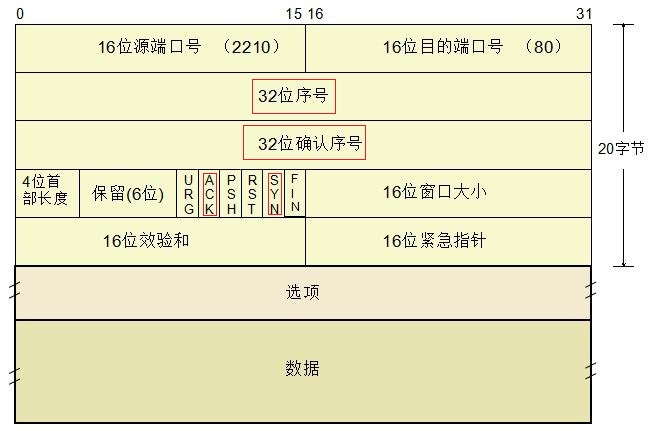
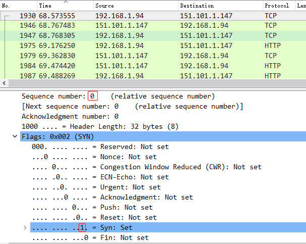
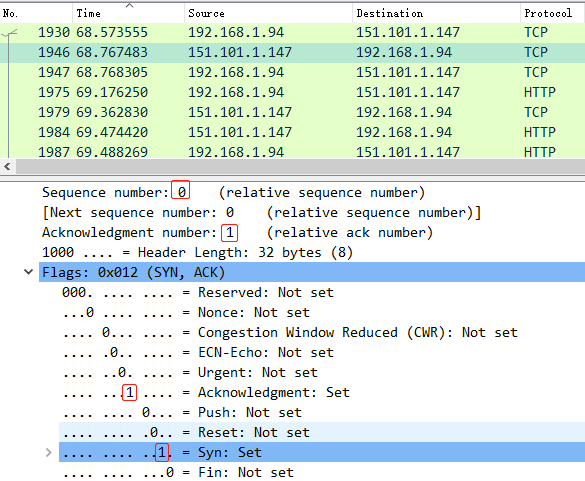
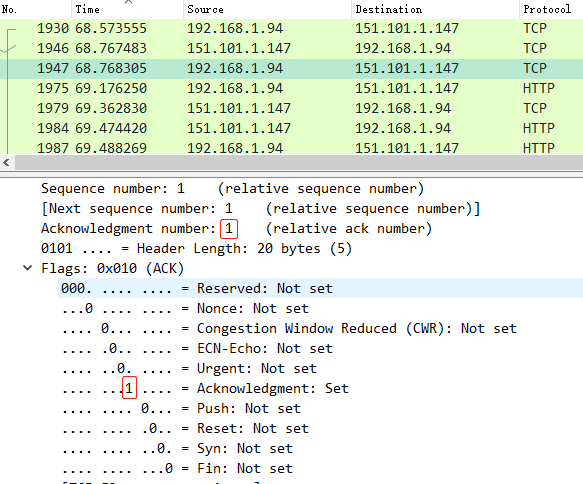

抓包分析TCP三次握手--简述四次挥手
本篇记录一下利用wireshark抓tcp封包来分析tcp三次握手的过程，巩固一下网络基础知识。
三次握手
因为http是基于tcp的，所以在这里我就直接打开浏览器进行网页请求，打开wireshark，写好filter条件，开始capture：
回忆一下tcp报文的header信息，红色框内信息为握手过程交互的关键字段。

接下来根据实际请求来详细分析一下，访问我的blog地址，解析出的ip是151.101.1.147，我的本机ip为192.168.1.94，下图最上面的三条即为三次握手协议。为简述将本地称为A，远端称为B。

将SYN置1；发送A的序号0

将SYN、ACK置1；发送ACK number=A的序号+1=0+1=1；发送B的序号0

将ACK置1；发送ACK number=B的序号+1=0+1=1
至此，双方的TCP连接就建立起来了，可以开始传送数据了。
四次挥手
建立连接需要三次握手，为什么断开连接还需要四次挥手呢？下面简述一下四次挥手的过程
A发起中断连接请求，就是发送FIN报文。和上面的SYN、ACK一样，FIN为一个bit的状态码，FIN=1表示要中断连接。
B收到A的中断请求后，要回复A一个ACK告诉自己已经收到中断请求的消息了。但是B可能还有向A传输的数据没有完成，socket不能马上关闭，所以只能让A等待。
B的数据传输完毕之后，告诉A可以关闭连接了，发送FIN=1给A。
A收到B的关闭请求后，就知道可以关闭连接了。为了防止B不知道要关闭，所以还要发送一次ACK给B，之后自己进入等待，如果B没有收到ACK则可以重传。B收到ACK后，就可以断开连接了。如果A等待了一定时间后没有收到回复，表示B已正常关闭，则自己也关闭连接，这样就完成了连接断开的全部操作。
断开连接比建立连接多了一次的原因就是：在建立连接时B端的SYN和ACK是可以同时发送的，但是在断开的时候，FIN字段必须要等到B端传输完成后才能发送，并不能像SYN一样能同ACK一起发送给客户端，所以多了一次等待和发送，这样有了4次挥手的过程。